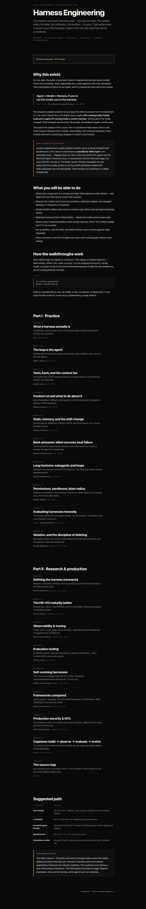

A self-paced course · compiled August 2026
The model is one input. Everything else — the loop, the tools, the context policy, the state, the verification, the sandbox — is yours. That surface area is where most of the leverage in agent work now sits, and it has almost no textbook.

For two years the public conversation about AI engineering has been about models: which one is smartest, which hallucinates less, what happens at the next checkpoint. That conversation is fine as far as it goes, and it is missing the other half of the system.
Agent = Model + Harness. If you're not the model, you're the harness. Vivek Trivedy, The Anatomy of an Agent Harness, March 2026
The sharpest available evidence for how large this effect is comes from Terminal Bench 2.0. The same Claude Opus 4.6 weights place roughly #33 running inside Claude Code and roughly #5 running inside a custom harness. Nothing about the model changed. What changed was the tools, the prompt, the feedback signals, and the loop.
That gap is the subject of this course. Part I is practitioner field-report; Part II is the 2026 research literature (the H-ladder, observability, self-evolving harnesses). Every module ends with a scored quiz; progress is saved in your browser.
Harness engineering is roughly eighteen months old as a named discipline and the literature is thin. Most of what follows is practitioner field-report, not controlled study — flagged where so. Part II cites four 2026 arXiv papers and the Microsoft Agent Framework docs; I read abstracts and the Microsoft page, not every full PDF, and say so. The leader quotes (Osmani, Karpathy) are real posts read from public profiles on 02 Aug 2026 and linked; handles that 404'd (Böckeler) are not represented. Treat heuristics as hypotheses to ablate (Module 09).
A lab is a small, runnable Python script in the lab/ folder. Each one demonstrates one idea from the course by running a scripted FakeModel through a tiny harness — deterministic, offline, free, under a second. You are studying the harness, not the model; holding the model perfectly constant is the point.
Run a lab. Open a terminal in the repo and run the file named at the top of the lesson:
cd ~/harness-engineering
python3 lab/w01_loop.pyPython 3 standard library only. No install, no key, no network. On Windows the commands are the same from PowerShell (python instead of python3, backslashes in paths). Every lab prints a banner, runs the scenario, then reads the result out in plain English — so you see what the run shows before the explanation lands.
Read the output. Each lab prints a banner, the run, and a plain-English reading of what the numbers mean. The figures quoted in the lessons (tool-tax chars, the 112x green-run gap, the 96.2% subagent reduction) are produced by these scripts — run them and you will see the same numbers.
Change things. Most lessons end with exercises that say "in lab/w0X.py, change Y and watch Z." Open the file in any editor, edit the value, re-run. The harness_lab.py module at the top of lab/ holds the shared runtime (FakeModel, tools, the harness loop, the context policies) — read it once and every lab afterwards reads like variation on a theme.
Wire a real model in. At Module 09 and the Module 17 capstone you replace the fake model with a live one: implement a single complete() method that returns either {"type": "text", ...} or {"type": "tool_call", ...}. Nothing else in harness_lab.py changes. From there, run each lab n > 1 and report variance — one run against a real model is an anecdote, not a measurement.
A lab is not a test you pass or fail. It is a demonstration you can poke. The quizzes (scored, saved in your browser) are the check on understanding; the labs are the thing you break on purpose.
The definition, the four-layer stack, the boundary against SDK/framework/eval-harness, flip-card terms.
Build an agent in twelve lines, break it three ways. Stop conditions, error recovery, the loop diagram.
The 26,310-char (~6,577 token) tax before your task is read. CLI-over-MCP as a decision rule. Allow-lists.
None / compaction / offload on one trajectory, with the needle test. Compaction destroys; offload preserves.
Context reset vs compaction. Initializer agents, structured handoff, the "done by proximity" failure.
The measured 112x gap between a verbose and a silent green run. Guides vs sensors. The agent can't grade itself.
Subagents as a context firewall (96.2% reduction). The Ralph loop. Where harness engineering ends.
Injection as architecture, not prompting. The pets-to-cattle refactor, the credential proxy, three blast-radius layers.
The harness confound in every agent number. The HarnessCard. The ablation table as an evaluation instrument.
Assumptions expire. The one-at-a-time method, the bitter-lesson argument, and the capstone: build, then remove half.
Macedo's constitutive definition, the inclusion/exclusion test, the five confusions, the design-tension axes.
Zhong & Zhu's eleven responsibilities and four-level ladder. Interactive accordion. The episode package.
Traces, token counts, replay, failure attribution. OpenTelemetry as the substrate. The append-only, reversible log.
LangSmith, harness-evals (five dimensions), Langfuse experiments — and a runnable stdlib eval you can execute.
AHE's three observability pillars (69.7%→77.0%). HarnessX's composable/adaptive/evolvable foundry (+14.5% avg).
OpenAI Agents, LangGraph, Microsoft Agent Framework, CrewAI/AutoGen, DSPy, LlamaIndex on the axes that matter.
The production control set, where humans stay in the loop, rollback from the trace, governance on the card.
The whole course as one loop. Phase checklist, the one-page deliverable, deletion as the closing step.
Every primary source, annotated: what it is, why it matters, what to read it for, and how much weight its claims carry.
| If you have | Do this |
|---|---|
| One evening | 00, 01, 03, 05 — definition, loop, context, verification: the load-bearing quarter. |
| A weekend | Part I in order. Run every walkthrough; do the exercises. |
| You build agents already | Start at 05, then 09, 08. The gap is verification design and the discipline of deleting. |
| Research bent | Part II: 10 → 11 → 12 → 14, then 13 and 15. |
| Evaluating a vendor | 08 and 07, then 16. Ask for a HarnessCard; ask where their credentials live. |
The field's canon is ~18 months old and its strongest claims come from teams shipping products they also sell. Anthropic's harness posts are excellent engineering writing and also Claude marketing. The LangChain post defines a term while selling a framework. The 2026 papers are preprint-stage. Read for mechanism, discount the framing, verify against your own ablations.